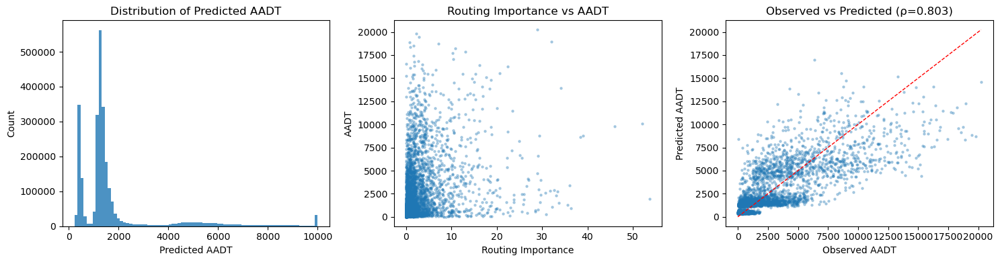

Replication of Morley & Gulliver (2016) Methods to improve traffic flow and noise exposure estimation on minor roads using pgRouting on England OSM data.
Data sources: - Road network: OpenStreetMap England (imported via osm2po → pgRouting) - Training data: DfT AADF minor road count points (n ≈ 4,400 nationally) - Urban/rural: ONS Output Area Rural-Urban Classification (2021 Census)
Pipeline:
Step
Section
Description
1
§2–3
Classify OSM roads as major/minor; create pgRouting topology
2
§4–5
Polygonize major roads into enclosed zones; identify coastal roads
Standardize traversals by zone size → routing importance index
5
§8
Export routed network from PostGIS
6
§9–10
Match DfT count points to routed network; build training features
7
§11
Fit Poisson GLM with 5-fold cross-validation
8
§12
Predict AADT for all minor roads; clip to West Midlands
Reference: Morley, D.W., Gulliver, J. (2016). Methods to improve traffic flow and noise exposure estimation on minor roads. Environmental Pollution, 216, 746–754. GitHub: dwmorley/Minor_Roads
1. Setup and Database Connection
Connect to the PostgreSQL database routing_england containing the England OSM road network imported via osm2po (2,996,810 segments, 2,605,381 vertices).
Code
import warningswarnings.filterwarnings('ignore')import os, timefrom pathlib import Pathimport numpy as npimport pandas as pdimport geopandas as gpdimport matplotlib.pyplot as pltimport statsmodels.api as smfrom scipy import statsfrom scipy.stats import spearmanrfrom scipy.spatial import cKDTreefrom sklearn.model_selection import KFoldfrom sklearn.metrics import r2_score, mean_squared_errorimport psycopg2DATA_DIR = Path('../Data/Raw')OUTPUT_DIR = Path('../Data/Cleaned')OUTPUT_DIR.mkdir(parents=True, exist_ok=True)CRS_BNG ='EPSG:27700'CRS_WGS84 ='EPSG:4326'conn = psycopg2.connect('dbname=routing_england user=pippin')conn.autocommit =Truecur = conn.cursor()cur.execute('SELECT pgr_version();')print(f'pgRouting: {cur.fetchone()[0]}')cur.execute('SELECT count(*) FROM england_2po_4pgr;')print(f'Segments: {cur.fetchone()[0]:,}')
pgRouting: 4.0.1
Segments: 2,996,810
2. Classify Major / Minor Roads
OSM road types are mapped to the major/minor classification used by M&G (2016). Major roads correspond to DfT’s motorway and A-road network; minor roads correspond to B-roads and below.
osm2po clazz
OSM highway type
M&G classification
11, 12
motorway, motorway_link
Major
13, 14
trunk, trunk_link
Major
15, 16
primary, primary_link
Major
21, 22
secondary, secondary_link
Minor
31, 32
tertiary, tertiary_link
Minor
41
residential
Minor
42
living_street
Minor
43
unclassified
Minor
other
service, track, etc.
Minor
Code
cur.execute('''DROP TABLE IF EXISTS pgr_gb CASCADE;CREATE TABLE pgr_gb ASSELECT id AS gid, osm_id, osm_name, clazz, source, target, km, kmh, cost, reverse_cost, x1, y1, x2, y2, geom_way AS geom, CASE WHEN clazz BETWEEN 11 AND 16 THEN 0 ELSE 1 END AS minor, CASE WHEN clazz IN (11,12) THEN 'motorway' WHEN clazz IN (13,14) THEN 'trunk' WHEN clazz IN (15,16) THEN 'primary' WHEN clazz IN (21,22) THEN 'secondary' WHEN clazz IN (31,32) THEN 'tertiary' WHEN clazz = 41 THEN 'residential' WHEN clazz = 42 THEN 'living_street' WHEN clazz = 43 THEN 'unclassified' ELSE 'other' END AS fclassFROM england_2po_4pgr;CREATE INDEX pgr_gb_geom_idx ON pgr_gb USING gist(geom);CREATE INDEX pgr_gb_gid_idx ON pgr_gb (gid);''')df = pd.read_sql('SELECT minor, fclass, count(*) as n FROM pgr_gb GROUP BY minor, fclass ORDER BY minor, n DESC', conn)print(df.to_string(index=False))
Validate the existing osm2po topology (source/target node IDs) and partition the network into separate major and minor road tables for the polygonization step.
Code
# Validate existing topologytopo_stats = pd.read_sql("""SELECT COUNT(*) AS edges, COUNT(DISTINCT source) AS unique_sources, COUNT(DISTINCT target) AS unique_targets, SUM(CASE WHEN source IS NULL THEN 1 ELSE 0 END) AS null_source, SUM(CASE WHEN target IS NULL THEN 1 ELSE 0 END) AS null_targetFROM pgr_gb;""", conn)print('Topology stats:')print(topo_stats)# Partition into major / minorcur.execute("""DROP TABLE IF EXISTS pgr_gb_major;CREATE TABLE pgr_gb_major AS SELECT * FROM pgr_gb WHERE minor = 0;CREATE INDEX pgr_gb_major_geom_idx ON pgr_gb_major USING GIST(geom);DROP TABLE IF EXISTS pgr_gb_minor;CREATE TABLE pgr_gb_minor AS SELECT * FROM pgr_gb WHERE minor = 1;CREATE INDEX pgr_gb_minor_geom_idx ON pgr_gb_minor USING GIST(geom);""")major_n = pd.read_sql('SELECT count(*) AS n FROM pgr_gb_major', conn).iloc[0, 0]minor_n = pd.read_sql('SELECT count(*) AS n FROM pgr_gb_minor', conn).iloc[0, 0]print(f'Major roads: {major_n:,}')print(f'Minor roads: {minor_n:,}')
4. Polygonize Major Roads → Zones
Following M&G minor_assignment_dataprep.sql, the major road network is used to partition the study area into enclosed zones:
Compute the bounding box of the full road network
Buffer all major road geometries by 0.001° (~100 m)
Subtract the buffered major roads from the bounding box: ST_Difference(bbox, ST_Union(buffer))
Dump the resulting multipolygon into individual polygons — each polygon is an enclosed area of minor roads bounded by major roads
“Distinct networks of minor roads only accessible to each other without a major road being crossed. Think of the holes in a net pattern created by the major road network.” — M&G GitHub README
Code
t0 = time.time()print('Creating bounding box...')cur.execute('''DROP TABLE IF EXISTS bbox;CREATE TABLE bbox AS SELECT ST_Extent(geom)::geometry AS geom FROM pgr_gb;SELECT UpdateGeometrySRID('bbox','geom',4326);''')print('Polygonizing major roads (may take 10-30 min for England)...')cur.execute('''DROP TABLE IF EXISTS major_polys_temp;CREATE TABLE major_polys_temp AS SELECT ST_Buffer((ST_Dump(ST_Difference(b.geom, ST_Union(r.geom)))).geom, 0.001) AS geomFROM bbox AS b, (SELECT ST_Buffer(m.geom, 0.001) AS geom, m.gid FROM pgr_gb_major AS m) AS rWHERE ST_Intersects(b.geom, r.geom)GROUP BY b.geom;ALTER TABLE major_polys_temp ADD COLUMN gid SERIAL;''')cur.execute('''DROP TABLE IF EXISTS major_polys;CREATE TABLE major_polys AS SELECT p.gid, p.geom FROM major_polys_temp AS p WHERE p.gid != 1;ALTER TABLE major_polys ADD COLUMN id SERIAL;CREATE INDEX major_polys_geom_idx ON major_polys USING gist(geom);''')n = pd.read_sql('SELECT count(*) FROM major_polys', conn).iloc[0, 0]print(f'Created {n:,} zones in {(time.time()-t0)/60:.1f} min')
5. Identify Coastal Road Groups
Minor roads not enclosed by any major-road polygon (e.g. coastal areas, islands) are identified separately. These are grouped by spatial connectivity — minor roads that can reach each other without crossing a major road belong to the same group.
Coastal groups are routed in §6c using the same Dijkstra approach but with group membership instead of polygon containment.
Code
cur.execute('''DROP TABLE IF EXISTS major_poly_buf;CREATE TABLE major_poly_buf ASSELECT ST_Buffer(p.geom, 0.001) AS geom FROM major_polys AS p;CREATE INDEX major_poly_buf_geom_idx ON major_poly_buf USING gist(geom);DROP TABLE IF EXISTS coast_roads;CREATE TABLE coast_roads ASSELECT r.gid, r.geom, r.fclass FROM pgr_gb_minor AS r WHERE NOT EXISTS ( SELECT 1 FROM ( SELECT DISTINCT ON (r2.gid) r2.gid FROM pgr_gb_minor AS r2, major_poly_buf AS p WHERE ST_Contains(p.geom, r2.geom) ) AS ip WHERE ip.gid = r.gid);DROP TABLE IF EXISTS coast_roads_grps;CREATE TABLE coast_roads_grps ASSELECT (ST_Dump(ST_Union(ST_Buffer(r.geom, 0.00001)))).geom AS geom FROM (SELECT cr.gid, ST_CollectionExtract(cr.geom, 2) AS geom FROM coast_roads AS cr) AS r;ALTER TABLE coast_roads_grps ADD COLUMN id SERIAL;CREATE INDEX coast_roads_grps_geom_idx ON coast_roads_grps USING gist(geom);DROP TABLE IF EXISTS coast_roads_net;CREATE TABLE coast_roads_net ASSELECT r.gid, g.id, r.geomFROM (SELECT cr.gid, ST_CollectionExtract(cr.geom, 2) AS geom FROM coast_roads AS cr) AS rINNER JOIN coast_roads_grps AS g ON ST_Contains(g.geom, r.geom);''')print(f"Coastal roads: {pd.read_sql('SELECT count(*) FROM coast_roads', conn).iloc[0,0]:,}")print(f"Coastal groups: {pd.read_sql('SELECT count(*) FROM coast_roads_grps', conn).iloc[0,0]:,}")
6. Zone-Based Dijkstra Routing
This is the core computation of the routing importance algorithm.
Algorithm (per zone)
For each enclosed polygon (§6b) and each coastal group (§6c):
Extract minor road edges inside the zone
Source points: minor road endpoints that touch the zone boundary (i.e. where a minor road meets a major road = entry points)
Target points: all minor road endpoints inside the zone
Route from each source to all targets using pgr_dijkstra on the full road network (routes may use major roads if more efficient)
Count how many times each minor road edge is traversed
“Starting with every point where a minor road intersects the major road network, the shortest driving route to every other minor road accessible without crossing another major road is calculated.” — Morley & Gulliver (2016, p. 748)
6a. Setup routing tables
Code
cur.execute("""DROP TABLE IF EXISTS totals;CREATE TABLE totals ASSELECT gid, 0::BIGINT AS total, 0::INTEGER AS poly_gidFROM pgr_gb;CREATE INDEX totals_gid_idx ON totals(gid);""")print('Routing tables ready.')
6b. Route through enclosed zones
For each of the major-road-bounded polygons, identify source (entry) and target (interior) nodes, then run one-to-many Dijkstra. Edge traversal counts are accumulated in the totals table.
Code
cur.execute("SET work_mem = '512MB';")cur.execute("SET statement_timeout = 30000;")polys = pd.read_sql('SELECT gid FROM major_polys ORDER BY gid', conn)['gid'].tolist()print(f'Processing {len(polys)} enclosed zones...')t0 = time.time()zones_done =0total_routes =0for poly_id in polys:# 1. Extract minor road edges inside this polygon cur.execute(f""" SELECT gid, source, target, cost, reverse_cost FROM pgr_gb WHERE minor = 1 AND ST_Intersects( (SELECT ST_Buffer(geom, 0.0001) FROM major_polys WHERE gid = {poly_id}), geom) """) poly_roads = cur.fetchall()ifnot poly_roads: zones_done +=1continue targets =list(set(n for row in poly_roads for n in (row[1], row[2])))ifnot targets: zones_done +=1continue edge_gids = [row[0] for row in poly_roads] edge_gids_sql =','.join(map(str, edge_gids))# 2. Extract boundary entry nodes (where minor roads meet major road polygon edge) cur.execute(f""" SELECT DISTINCT src_id FROM ( SELECT c.source AS src_id FROM pgr_gb c WHERE c.gid IN ({edge_gids_sql}) AND ST_DWithin(ST_StartPoint(c.geom), (SELECT ST_ExteriorRing(geom) FROM major_polys WHERE gid = {poly_id}), 0.0001) UNION SELECT c.target AS src_id FROM pgr_gb c WHERE c.gid IN ({edge_gids_sql}) AND ST_DWithin(ST_EndPoint(c.geom), (SELECT ST_ExteriorRing(geom) FROM major_polys WHERE gid = {poly_id}), 0.0001) AND ST_Contains( (SELECT geom FROM major_polys WHERE gid = {poly_id}), ST_StartPoint(c.geom)) ) q """) sources = [r[0] for r in cur.fetchall()]ifnot sources: zones_done +=1continue# 3. Dijkstra routing with adaptive batching edge_sql =f"SELECT gid AS id, source, target, cost, reverse_cost FROM pgr_gb WHERE gid IN ({edge_gids_sql})"iflen(targets) >5000: src_batch, tgt_batch =5, 1000eliflen(targets) >1000: src_batch, tgt_batch =10, 2000else: src_batch, tgt_batch =20, len(targets) polygon_failed =Falsefor i inrange(0, len(sources), src_batch):if polygon_failed:break sub_src = sources[i:i + src_batch] src_sql ='['+','.join(map(str, sub_src)) +']'for j inrange(0, len(targets), tgt_batch): sub_tgt = targets[j:j + tgt_batch] tgt_sql ='['+','.join(map(str, sub_tgt)) +']'try: cur.execute(f""" WITH paths AS ( SELECT edge, COUNT(*) AS cnt FROM pgr_dijkstra($$ {edge_sql} $$, ARRAY{src_sql}, ARRAY{tgt_sql}, directed := true) WHERE edge > 0 GROUP BY edge ) UPDATE totals t SET total = t.total + p.cnt, poly_gid = {poly_id} FROM paths p WHERE t.gid = p.edge; """) total_routes +=len(sub_src) *len(sub_tgt)exceptExceptionas e: conn.rollback()print(f'Zone {poly_id} failed: {e}') polygon_failed =Truebreakifnot polygon_failed: zones_done +=1if zones_done %20==0: conn.commit()if zones_done %200==0: elapsed = time.time() - t0 rate = zones_done / elapsed *60 remain = (len(polys) - zones_done) /max(rate, 0.1)print(f'{zones_done}/{len(polys)} | {elapsed/60:.1f} min | ETA {remain:.0f} min | {total_routes:,} routes')cur.execute('RESET work_mem;')cur.execute('RESET statement_timeout;')conn.commit()print(f'\nEnclosed zones done in {(time.time()-t0)/60:.1f} min | {total_routes:,} routes')
6c. Route through coastal groups
Same logic as §6b, but using coastal road group membership instead of polygon containment. Sources are minor road endpoints adjacent to major roads.
Code
cur.execute("SET work_mem = '512MB';")cur.execute("SET statement_timeout = 45000;")groups = pd.read_sql('SELECT DISTINCT id FROM coast_roads_grps ORDER BY id', conn)['id'].tolist()print(f'Processing {len(groups)} coastal groups...')t0c = time.time()groups_done =0total_routes_coast =0for grp_id in groups: cur.execute(f""" SELECT r.gid, r.source, r.target, r.cost, r.reverse_cost FROM pgr_gb r INNER JOIN coast_roads_net c ON r.gid = c.gid WHERE c.id = {grp_id} """) grp_roads = cur.fetchall()ifnot grp_roads: groups_done +=1continue targets =list(set(n for row in grp_roads for n in (row[1], row[2])))ifnot targets: groups_done +=1continue edge_gids = [row[0] for row in grp_roads] edge_gids_sql =','.join(map(str, edge_gids))# Boundary nodes: minor road endpoints near major roads cur.execute(f""" SELECT DISTINCT src_id FROM ( SELECT c.source AS src_id FROM pgr_gb c WHERE c.gid IN ({edge_gids_sql}) AND EXISTS (SELECT 1 FROM pgr_gb_major m WHERE ST_DWithin(ST_StartPoint(c.geom), m.geom, 0.001)) UNION SELECT c.target AS src_id FROM pgr_gb c WHERE c.gid IN ({edge_gids_sql}) AND EXISTS (SELECT 1 FROM pgr_gb_major m WHERE ST_DWithin(ST_EndPoint(c.geom), m.geom, 0.001)) ) q """) sources = [r[0] for r in cur.fetchall()]ifnot sources: groups_done +=1continue edge_sql =f"SELECT gid AS id, source, target, cost, reverse_cost FROM pgr_gb WHERE gid IN ({edge_gids_sql})"iflen(targets) >5000: src_batch, tgt_batch =5, 1000eliflen(targets) >1000: src_batch, tgt_batch =10, 2000else: src_batch, tgt_batch =20, len(targets) group_failed =Falsefor i inrange(0, len(sources), src_batch):if group_failed:break sub_src = sources[i:i + src_batch] src_sql ='['+','.join(map(str, sub_src)) +']'for j inrange(0, len(targets), tgt_batch): sub_tgt = targets[j:j + tgt_batch] tgt_sql ='['+','.join(map(str, sub_tgt)) +']'try: cur.execute(f""" WITH paths AS ( SELECT edge, COUNT(*) AS cnt FROM pgr_dijkstra($$ {edge_sql} $$, ARRAY{src_sql}, ARRAY{tgt_sql}, directed := true) WHERE edge > 0 GROUP BY edge ) UPDATE totals t SET total = t.total + p.cnt FROM paths p WHERE t.gid = p.edge; """) total_routes_coast +=len(sub_src) *len(sub_tgt)exceptExceptionas e: conn.rollback()print(f'Coastal group {grp_id} failed: {e}') group_failed =Truebreak groups_done +=1if groups_done %20==0: conn.commit()cur.execute('RESET work_mem;')cur.execute('RESET statement_timeout;')conn.commit()print(f"Coastal done in {(time.time()-t0c)/60:.1f} min")print(f"Edges traversed: {pd.read_sql('SELECT count(*) FROM totals WHERE total > 0', conn).iloc[0,0]:,}")
7. Standardize Routing Importance
Following M&G minor_assignment_index.sql:
Raw traversal counts are standardized to account for zone size — larger zones have more traversals simply because they contain more roads and destinations.
Each minor road is assigned to the zone containing the majority of its length. Un-traversed minor roads (dead ends, isolated links) receive a baseline score of 1 to avoid division errors.
Code
cur.execute('''UPDATE totals SET total = 1WHERE total = 0 AND gid IN (SELECT gid FROM pgr_gb WHERE minor = 1);-- Midpoint of each road for zone assignmentDROP TABLE IF EXISTS road_centres;CREATE TABLE road_centres ASSELECT r.gid, ST_LineInterpolatePoint(r.geom, 0.5) AS geom FROM pgr_gb AS r;CREATE INDEX road_centres_geom_idx ON road_centres USING gist(geom);-- Minor roads that fall inside a major-road polygon (non-coastal)DROP TABLE IF EXISTS not_coast_roads;CREATE TABLE not_coast_roads ASSELECT r.gid, r.geom FROM(SELECT r.gid FROM road_centres AS r, major_polys AS p WHERE ST_Intersects(p.geom, r.geom)) AS c LEFT JOIN pgr_gb AS r ON r.gid = c.gid WHERE r.minor = 1;-- Assign each non-coastal minor road to the polygon it overlaps mostDROP TABLE IF EXISTS road_poly_intersects;CREATE TABLE road_poly_intersects ASSELECT g.gid, g.geom, p.gid AS poly_gidFROM major_polys AS p, not_coast_roads AS gWHERE ST_Intersects(p.geom, g.geom);DROP TABLE IF EXISTS road_intersect_length;CREATE TABLE road_intersect_length ASSELECT i.gid, ST_Length(ST_Intersection(ST_MakeValid(p.geom), ST_MakeValid(i.geom))) AS length, i.poly_gidFROM road_poly_intersects AS i LEFT JOIN major_polys AS p ON p.gid = i.poly_gid;DROP TABLE IF EXISTS intersect_majority;CREATE TABLE intersect_majority ASSELECT DISTINCT ON (i.gid) i.gid, i.poly_gidFROM road_intersect_length AS iGROUP BY i.gid, i.length, i.poly_gidORDER BY i.gid, i.length DESC;-- Count roads per polygon / per coastal groupDROP TABLE IF EXISTS major_poly_road_counts;CREATE TABLE major_poly_road_counts ASSELECT i.poly_gid, count(i.poly_gid) AS countFROM intersect_majority AS i GROUP BY i.poly_gid;DROP TABLE IF EXISTS coast_road_counts;CREATE TABLE coast_road_counts ASSELECT i.id, count(i.id) AS countFROM coast_roads_net AS i GROUP BY i.id;-- Final: norm = total / roads_in_zoneDROP TABLE IF EXISTS pgr_gb_routed;CREATE TABLE pgr_gb_routed ASSELECT j.*, r.geom, r.fclass, r.osm_id, r.km, r.kmh FROM ( SELECT DISTINCT ON (n.gid) n.gid, n.total, n.count, (n.total / CAST(NULLIF(n.count,0) AS numeric)) AS norm FROM ( SELECT t.gid, t.total, i.poly_gid, n.count FROM intersect_majority AS i LEFT JOIN totals AS t ON i.gid = t.gid LEFT JOIN major_poly_road_counts AS n ON n.poly_gid = i.poly_gid UNION ALL SELECT c.gid, t.total, c.id AS poly_gid, n.count FROM coast_roads_net AS c LEFT JOIN totals AS t ON t.gid = c.gid LEFT JOIN coast_road_counts AS n ON c.id = n.id UNION ALL SELECT r.gid, 1, 0, 1 FROM pgr_gb AS r WHERE r.minor = 1 AND NOT EXISTS (SELECT 1 FROM intersect_majority AS i WHERE i.gid = r.gid) AND NOT EXISTS (SELECT 1 FROM coast_roads_net AS c WHERE c.gid = r.gid) ) AS n ORDER BY n.gid, n.total DESC) AS j LEFT JOIN pgr_gb AS r ON r.gid = j.gid;CREATE INDEX pgr_gb_routed_geom_idx ON pgr_gb_routed USING gist(geom);''')result = pd.read_sql('SELECT count(*) as n, avg(norm) as mean_importance, max(norm) as max_importance FROM pgr_gb_routed WHERE norm > 0', conn)print('Standardization complete:')print(result)
8. Export Routed Network from PostGIS
The pgRouting results (routing importance per OSM edge) are exported as GeoDataFrames for use in the Poisson GLM. From this point onward, all processing is in Python/GeoPandas.
Code
# Export all minor roads with routing importanceminor_routed = gpd.read_postgis(''' SELECT gid, osm_id, fclass, km, kmh, norm AS routing_importance, geom FROM pgr_gb_routed''', conn, geom_col='geom', crs=CRS_WGS84)print(f'Minor routed links: {len(minor_routed):,}')print(minor_routed[['fclass', 'routing_importance']].groupby('fclass').describe().round(2))
Code
# Export major roads (needed for nearest_major_aadt computation)major_roads = gpd.read_postgis(''' SELECT gid, osm_id, fclass, km, geom FROM pgr_gb WHERE minor = 0''', conn, geom_col='geom', crs=CRS_WGS84)print(f'Major road links: {len(major_roads):,}')
If Sections 2–7 have already been executed and the pgr_gb_routed table exists in PostGIS, the routed network can be loaded directly from here. This avoids re-running the computationally expensive routing step.
Code
CRS_BNG ='EPSG:27700'CRS_WGS84 ='EPSG:4326'conn = psycopg2.connect('dbname=routing_england user=pippin')# Minor roads with routing importanceminor_routed = gpd.read_postgis(''' SELECT gid, osm_id, fclass, km, kmh, norm AS routing_importance, geom FROM pgr_gb_routed''', conn, geom_col='geom', crs=CRS_WGS84)# Major roads (needed for nearest_major_aadt)major_roads = gpd.read_postgis(''' SELECT gid, osm_id, fclass, km, geom FROM pgr_gb WHERE minor = 0''', conn, geom_col='geom', crs=CRS_WGS84)conn.close()print(f'Minor routed links: {len(minor_routed):,}')print(f'Major road links: {len(major_roads):,}')print(f'\nRouting importance stats:')print(minor_routed['routing_importance'].describe().round(3))
Minor routed links: 2,641,590
Major road links: 355,220
Routing importance stats:
count 2641590.000
mean 1.257
std 3.690
min 0.000
25% 0.027
50% 0.105
75% 0.931
max 248.000
Name: routing_importance, dtype: float64
9. Load DfT Count Points and Urban/Rural Classification
DfT AADF (Annual Average Daily Flow) data provides traffic counts at ~20,000 locations nationally. For the Poisson GLM, we use: - Major road counts (motorway + A-road): ~15,000 points → used to compute nearest major road AADT for each minor road link - Minor road counts (B-road + C/U): ~4,400 points → training set
Urban/Rural Classification from the ONS 2021 Census Output Area boundaries is used as a binary predictor following M&G’s observation that AADT differs significantly between urban and rural settings for secondary, tertiary, and unclassified roads (Wilcoxon p < 0.01).
Code
# Load DfT AADF datadft_path = DATA_DIR /'DfT_Road_Traffic_Statistics/dft_traffic_counts_aadf/dft_traffic_counts_aadf.csv'dft = pd.read_csv(dft_path)# Use the latest available yearlatest_year = dft['year'].max()dft_latest = dft[dft['year'] == latest_year].copy()print(f'DfT data: {len(dft_latest):,} count points (year={latest_year})')print(f"Road categories: {dft_latest['road_category'].value_counts().to_dict()}")# Split major vs minor count points# TM = Trunk Motorway, TA = Trunk A-road, PA = Principal A-road, M = Minordft_major = dft_latest[dft_latest['road_category'].isin(['TM', 'TA', 'PA'])].copy()dft_minor = dft_latest[dft_latest['road_category'].isin(['MCU', 'MB'])].copy()print(f'Major road count points: {len(dft_major):,}')print(f'Minor road count points: {len(dft_minor):,}')
The model is a Generalised Linear Model with Poisson family, appropriate because traffic counts follow a Poisson distribution (Zhang et al., 2011). The log link function ensures non-negative predictions.
Predictors: - log_imp: log(1 + routing importance) — captures road connectivity - log_maj: log(1 + nearest major road AADT) — captures local traffic context - is_urban: binary urban/rural indicator - fclass_*: dummy variables for OSM road class (secondary, tertiary, residential, unclassified)
M&G (2016) reported 73.6% deviance explained on national data, with routing importance alone accounting for 40.3%.
The trained model is applied to all minor road links in the OSM network to generate AADT predictions. Each link requires the same features as the training data: routing importance (from pgRouting), nearest major road AADT (from DfT), urban/rural classification (from ONS), and road class (from OSM).
12.1 Compute prediction features
Code
# --- 12.1 Compute features for all minor road links ---all_minor = minor_bng.copy()# nearest major AADT for every minor link (use link midpoint)all_minor['mid_x'] = all_minor.geometry.interpolate(0.5, normalized=True).xall_minor['mid_y'] = all_minor.geometry.interpolate(0.5, normalized=True).yall_coords = np.column_stack([all_minor['mid_x'], all_minor['mid_y']])dists_all, idxs_all = major_tree.query(all_coords)all_minor['nearest_major_aadt'] = dft_major_gdf['aadt'].values[idxs_all]# urban/rural via spatial joinall_minor = gpd.sjoin( all_minor, oa_ruc, how='left', predicate='intersects').drop_duplicates(subset='gid', keep='first')all_minor = all_minor.drop(columns=['index_right'], errors='ignore')all_minor['is_urban'] = (all_minor['Urban_rura'] =='Urban').astype(int).fillna(0)# log-transform featuresall_minor['log_imp'] = np.log1p(all_minor['routing_importance'])all_minor['log_maj'] = np.log1p(all_minor['nearest_major_aadt'])print(f'All minor links with features: {len(all_minor):,}')
All minor links with features: 2,641,590
12.2 Generate predictions
Code
# --- 12.2 Build prediction matrix (must match training columns) ---X_pred = pd.get_dummies( all_minor[['log_imp', 'log_maj', 'is_urban', 'fclass']], columns=['fclass'], drop_first=True).astype(float)X_pred = sm.add_constant(X_pred)# Align columns with training matrix (add missing dummies as 0, drop extras)for col in X.columns:if col notin X_pred.columns: X_pred[col] =0.0X_pred = X_pred[X.columns]# Predictall_minor['predicted_aadt'] = final_model.predict(X_pred).valuesprint(f"Predicted AADT — min: {all_minor['predicted_aadt'].min():.0f}, "f"median: {all_minor['predicted_aadt'].median():.0f}, "f"max: {all_minor['predicted_aadt'].max():.0f}")
# --- 12.3 Save outputs ---# Convert back to WGS84 for interoperabilityoutput = all_minor[['gid', 'osm_id', 'fclass', 'km','routing_importance', 'nearest_major_aadt','is_urban', 'predicted_aadt', 'geom']].copy()output = output.to_crs(CRS_WGS84)# Save as GeoPackage (preserves types, single file)gpkg_path = OUTPUT_DIR /'minor_road_predicted_aadt.gpkg'output.to_file(gpkg_path, driver='GPKG')print(f'Saved: {gpkg_path}')print(f'\nTotal minor road links with predicted AADT: {len(output):,}')
Saved: ../Data/Cleaned/minor_road_predicted_aadt.gpkg
Total minor road links with predicted AADT: 2,641,590
12.4 Diagnostic plots
Code
# --- 12.4 Quick diagnostic plot ---fig, axes = plt.subplots(1, 3, figsize=(15, 4))# a) Predicted AADT distributionaxes[0].hist(output['predicted_aadt'].clip(upper=10000), bins=80, edgecolor='none', alpha=0.8)axes[0].set_xlabel('Predicted AADT')axes[0].set_ylabel('Count')axes[0].set_title('Distribution of Predicted AADT')# b) Routing importance vs predicted AADTaxes[1].scatter(train_clean['routing_importance'], train_clean['aadt'], alpha=0.3, s=5, label='Observed')ri_range = np.linspace(0, train_clean['routing_importance'].quantile(0.99), 100)axes[1].set_xlabel('Routing Importance')axes[1].set_ylabel('AADT')axes[1].set_title('Routing Importance vs AADT')# c) Observed vs predicted (training set)train_preds = final_model.predict(X)axes[2].scatter(y, train_preds, alpha=0.3, s=5)axes[2].plot([0, y.max()], [0, y.max()], 'r--', lw=1)axes[2].set_xlabel('Observed AADT')axes[2].set_ylabel('Predicted AADT')axes[2].set_title(f'Observed vs Predicted (ρ={np.mean(rhos):.3f})')plt.tight_layout()plt.savefig(OUTPUT_DIR /'aadt_diagnostics.png', dpi=150, bbox_inches='tight')plt.show()

13. Clip to West Midlands Study Area
The England-wide predictions are clipped to the seven metropolitan boroughs of the West Midlands Combined Authority. This WM-specific output is used in subsequent notebooks for LTS classification.